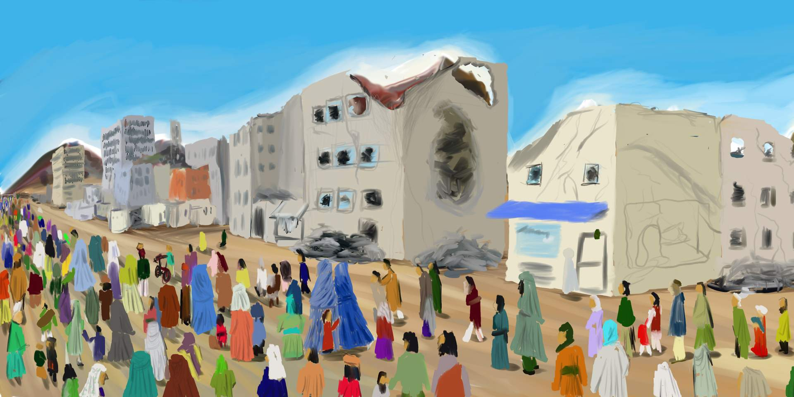
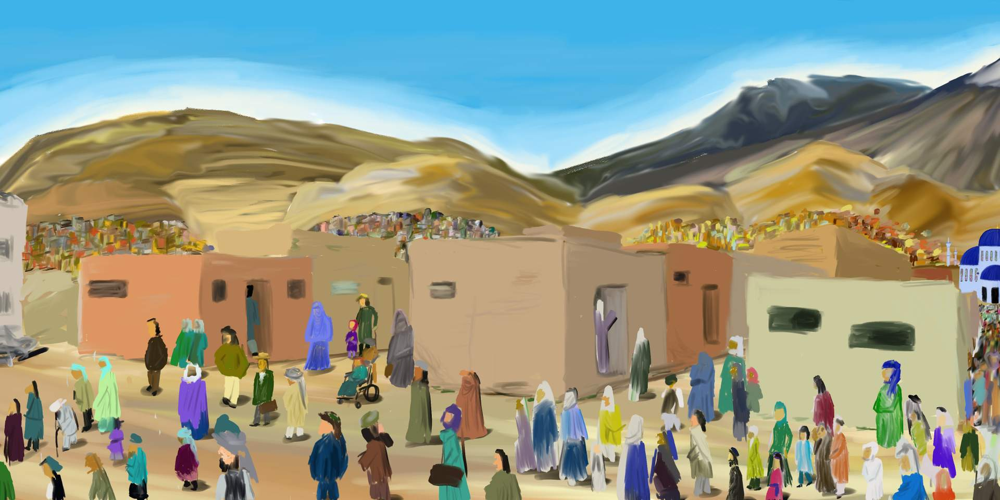
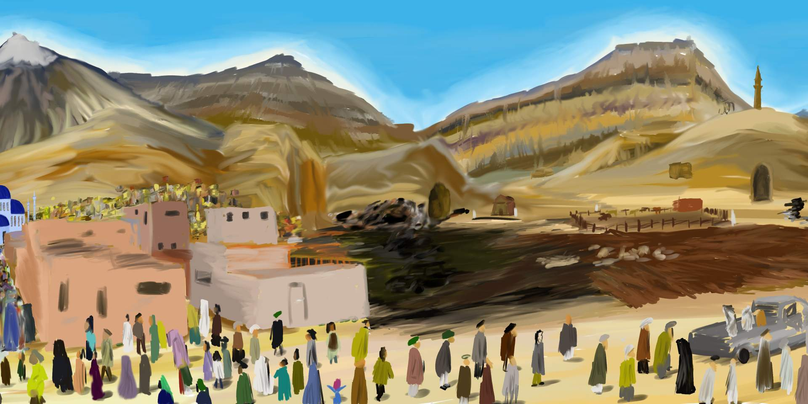
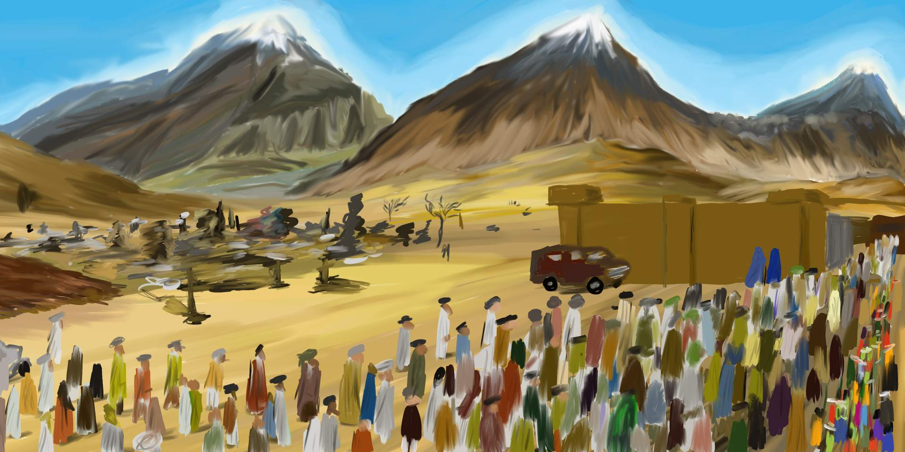
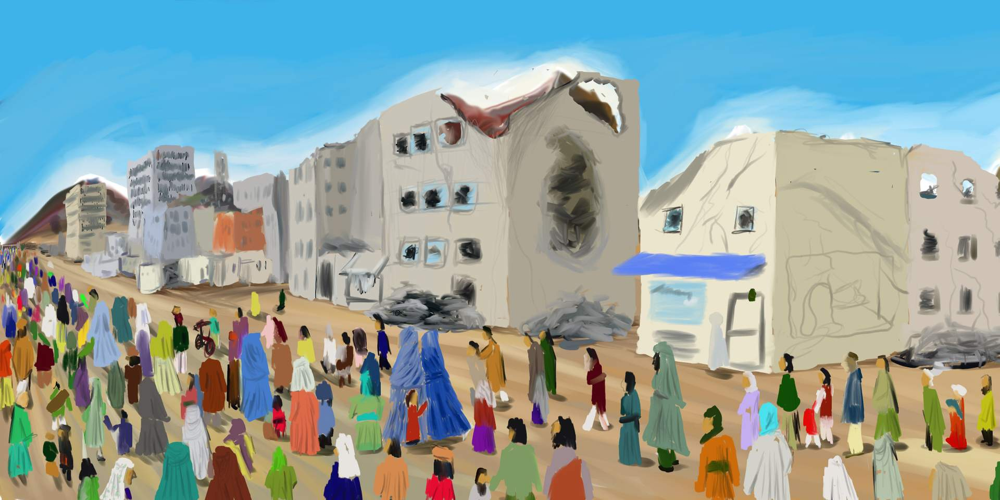
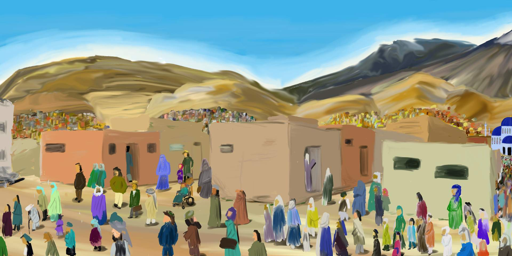
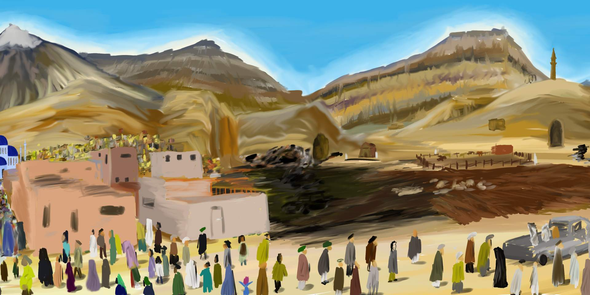
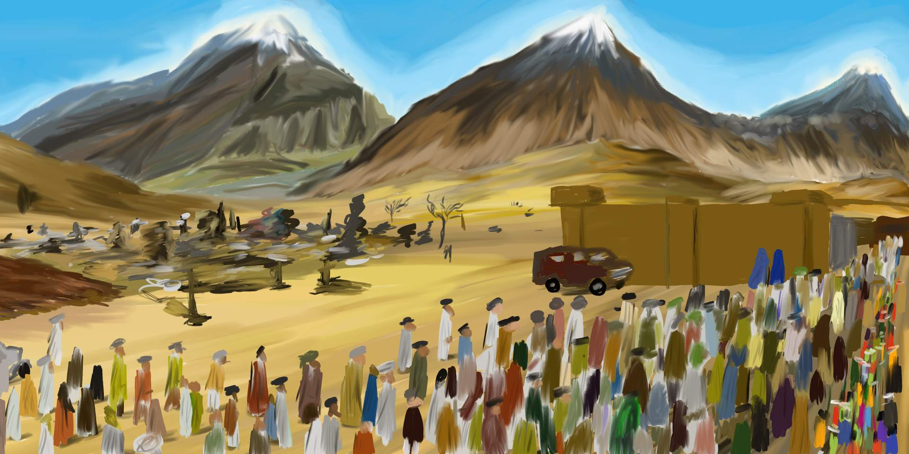

Liberators of the Land is a digital painting that I made as an attempt to expand on my digital art skills, as well as to tell a story.I made this as a way to show my concern for the people of Afghanistan and it's effect on the peoples lives after living through 20 years worth of conflict, and the many issues that have risen as a result of the taliban takeover of the government. And I wanted to show a contrast between the people that are apposed to the takeover to the people that have been energized by it. To give an idea of what years worth of war can do to a country and it's people.
As for technicals skills, this was one of my first big chance to do something in my major. For the most time, Ive drawn tradtionally using pen and paper, but this time I wanted to do something different, to exand both my medium and canvas. So I decided to try my hand at drawing in photoshop where I had free range to paint, edit, undo and even have a bigger canvas. This would allow me to start from a base template and build up from there as well as give an contrast to image of what to add and where to add it.
ARTIST BIO
Diego Esparza is an artist that works in both pictorial and digital works, mainly in drawing, painting, video art and photography. He says that his works are “a mix of different themes or ideas depending on his mood at the moment”. Originally majoring in computer science, he switched over to digital media art as a major but still likes to draw by hand using pencil and paper. Although he says that he doesn’t really have a theme to his work, there are very similar imagery and themes going on within his work. Very often, he tends to focus on detail, mainly focusing on ornate patterns and designs. Diego switches from different types of drawing mediums from representational to abstractions, but more often or not, most of his works revolve around modern contemporary themes or current political events or his own personal experiences.
 






